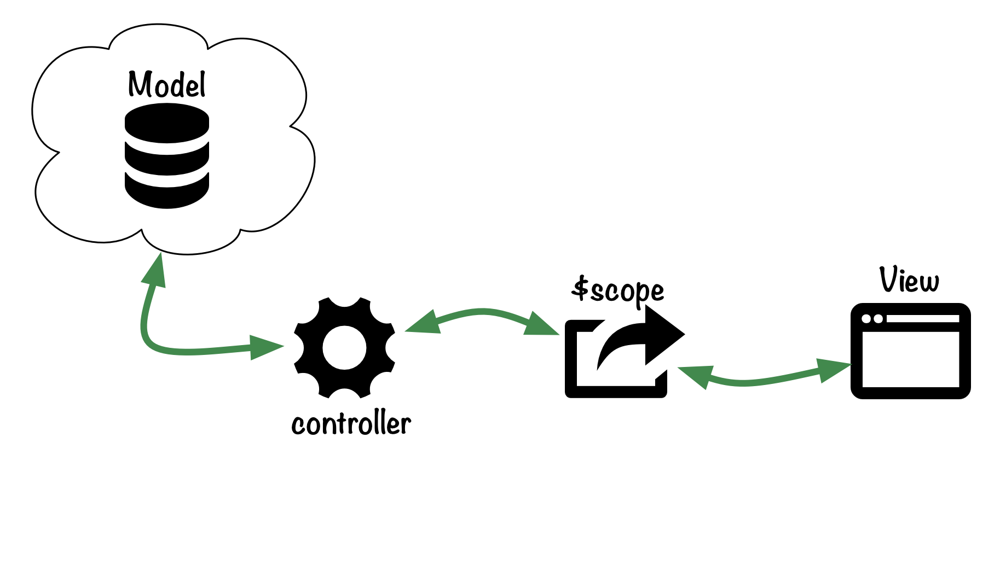

- Controllers &
$scope
- Services
- Filters
- Directives
controllers & $scope
example controller
angular.module('books').controller('BookListController', [
// set up dependency injection:
'$scope', '$window',
// controller (DI through function arguments)
function($scope, $window) {
$scope.books = $window.BOOKS;
$scope.getStarClass = function(rating, compare) {
return 'glyphicon glyphicon-star' +
((rating > compare) ? '' : '-empty');
};
// and so on
}
]);
...and hook it up
<!DOCTYPE html>
<html lang="en" ng-app="books">
<body>
<div ng-controller="BookListController">
<table>
<tr ng-repeat="book in books">
<td>{{book.title}}</td>
<td>{{book.author}}</td>
<td>{{book.rating}}</td>
</tr>
</table>
</div>
</body>
</html>
roughly illustrated

Services
example service
angular.module('books').factory('goodreadsService', ['$http',
function($http) {
function getShelf(userId, shelf) {
return $http.get(GOODREADS_HOST + REVIEWS_LIST, {
params: {
v: 2, key: API_KEY,
id: userId, shelf: shelf
}
});
}
return {
getShelf: getShelf
};
}
]);
Filters
example filter
angular.module('books').filter('dropSubTitle', [
function() {
return function(input, token) {
return input.split(token || ':')[0];
};
}
]);
...and using it
<ul>
<li ng-repeat="book in books">
<em ng-bind="book.title | dropSubTitle:'-'"></em> by
<span ng-bind="book.author"></span>
</li>
</ul>
Directives
example directive
angular.module('books').directive('grRating', [
function() {
return {
replace: true,
restrict: 'AC',
templateUrl: '/ng-templates/gr-rating',
scope: { rating: '=' },
link: function(scope, element, attrs) {
scope.getStarCss = function(compare) {
return 'glyphicon-star' +
((scope.rating > compare) ? '' : '-empty';
};
}
};
}
]);
/ng-templates/gr-rating
<div>
<span class="glyphicon" ng-class="getStarCss(0)"></span>
<span class="glyphicon" ng-class="getStarCss(1)"></span>
<span class="glyphicon" ng-class="getStarCss(2)"></span>
<span class="glyphicon" ng-class="getStarCss(3)"></span>
<span class="glyphicon" ng-class="getStarCss(4)"></span>
</div>
using that directive
<div ng-controller="BookListController">
<ul>
<li ng-repeat="book in books">
<!-- and our directive: -->
<span gr-rating data-rating="book.rating"></span>
</li>
</ul>
</div>
...and much more!
- core APIs
- jqLite
- routes
$apply, $digest, and $watch...- testing